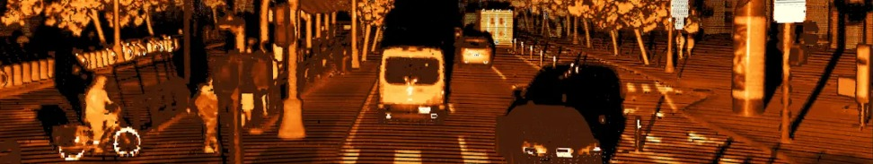
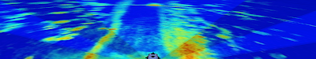
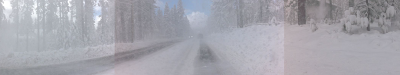
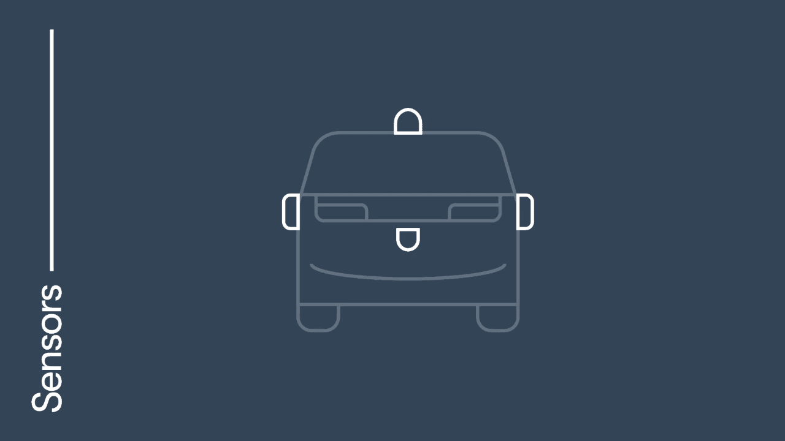

著者： Satish Jeyachandran（エンジニアリング担当バイスプレジデント）｜2026年2月12日
Waymoは第6世代Waymo Driverによる完全自律走行の開始を発表しました。これは、より多くの都市でより多くの乗客に当社のテクノロジーを届けるうえで重要な一歩です。この最新システムは、次の拡大フェーズを牽引する中核エンジンとして機能します。コスト削減に向けたシンプルな構成でありながら、Waymoの妥協なき安全基準を維持しています。複数の車両プラットフォームにわたる長期的な成長を想定して設計されており、拡張された能力によって、厳冬期の環境を含む多様な環境へ、これまで以上の規模で安全に進出することが可能になります。
第6世代Waymo Driverは、7年間にわたる実績ある安全サービスの結晶です。10以上の主要都市の最も密集した市街地と、拡大を続けるフリーウェイネットワークにおいて、約2億マイルの完全自律走行を積み重ねてきました。完全自律走行サービスをこれだけの規模で運営している唯一の企業としての経験から、ある根本的な真実が明確になっています。それは、「実証可能な安全なAIには、同じく堅牢な入力が不可欠」ということです。この実世界の要件に対する深い理解こそが、Waymo Driverが高解像度カメラ、高度なイメージングレーダー、LiDARを統合システムとして機能させる、カスタムのマルチモーダルセンシングスイートを採用している理由です。こうした多様な入力を活用することで、Waymo Driverは週に数百万マイルを走行する中で日常的に遭遇する「100万回に1度」のイベントという「ロングテール」を自信を持って乗り越えることができます。一つのレンズに任せきりにする必要はありません。
AIの飛躍的な進歩を活かし、厳格な安全フレームワークによってシステムを検証することで、かつてない速度と確信をもって実用化への道を加速させることができます。本日、第6世代Waymo Driverの高度なセンシング技術の全貌を公開します。拡張された能力を低コストで実現するこの技術の詳細をお伝えします。
Waymo Driverのビジョンシステムは、人間の視覚や一般的な車載カメラの能力をはるかに超えています。信号の色や道路標識といった意味的な情報を解釈するという点では人間と同じですが、その意識レベルは人間には到底及ばないものです。私たちのビジョンシステムは、あらゆる方向を同時に認識し、ハイビームや緊急車両のライトを真正面から浴びながらも、深い影の中の重要な細部を捉えることができるダイナミックレンジを備えています。
このシステムの核心にあるのは、次世代17メガピクセルイメージャーです。これは車載ビジョン技術における画期的な進歩です。この高解像度センサーは、驚くほど鮮明な映像のために数百万のデータポイントをキャプチャしながら、車載環境における優れた温度安定性を発揮します。これらのイメージャーにより、Waymo Driverは5メガピクセルや8メガピクセルのセンサーを使用した場合よりも少ないカメラ数で車両周囲を認識できます。その結果、解像度、ダイナミックレンジ、低光感度において、他の車載カメラより一世代先を行くシステムが実現しました。
悪天候でも信頼性が高いビジョンシステムには、自己クリーニング機能が不可欠です。一般的な車のカメラが雨粒、路面の汚れ、氷結に悩まされることがありますが、当社のシステムには視界を維持するための統合クリーニングシステムが搭載されています。カメラの視界が制限される状況では、LiDARとレーダーが必要な冗長性を提供し、Waymo Driverの認識機能を維持します。
高性能センシングへのこだわりはハードウェアシステム全体に及んでいます。複数のハードウェアコンポーネントに頼るのではなく、Waymoのカスタムシリコンチップにより多くの処理の複雑さを集約しました。このアプローチによって、驚くべき効率性で優れた結果を実現しています。新しいカメラは、コスト削減によりカメラ数を半分以下に抑えながらも、第5世代車両の高性能システムを上回るパフォーマンスを発揮します。
カメラが環境から反射した光を利用するのとは異なり、LiDARはレーザービームを使用して周囲の3次元画像（ポイントクラウド画像とも呼ばれる）を自ら照射して生成します。暗いフリーウェイで雨や雪の中を運転する際、視覚だけではいかに見通しが悪くなるかを、ご存知の方も多いでしょう。

WaymoのLiDARは非常に精細に世界を認識し、車両などの大きな物体の近くにいる歩行者などの小さな物体も、昼夜を問わず識別できます。
第6世代LiDARは、特に一般車両への手頃なLiDARの普及が進むにつれて、業界全体で進んだ過去5年間の大幅なコスト削減の恩恵を受けています。こうした市場効率を活かし、カスタム設計のチップと光学設計（コアコンポーネントはカリフォルニアで設計・製造）を組み合わせることで、より遠い距離でより高い精度と堅牢性を持ちながら、拡大に最適化されたコストプロファイルのシステムを開発しました。
戦略的に配置された短距離LiDARはカメラへの冗長なカバレッジを提供し、Waymo Driverがカメラ映像と正確な距離測定を結びつけることを可能にします。これは、脆弱な道路利用者の近くを走行する場合や、開いているカードア、センチメートル精度の距離測定が重要なその他の都市環境でのナビゲーションにおいて非常に重要です。物理的な配置に加え、LiDARがシーンを照射する方法とデータ内部処理についても再設計しました。これらのアップグレードにより、LiDARは悪天候を突き抜け、高反射性標識の近くでのポイントクラウド歪みを回避できるようになり、フリーウェイでの激しい路面スプレーやその他の複雑なエッジケースを視認するWaymo Driverの能力が拡張されました。
Waymoのイメージングレーダーはすべてのライティングおよび気象条件下で、物体の距離、速度、サイズを瞬時に追跡する高密度な時系列マップを生成します。より高感度かつ低コストになったレーダーチップセットを活用することで、業界全体のコスト削減の恩恵を受けながら、独自の能力拡大を続けています。


次世代レーダーは第5世代Waymo Driverの基盤を継承しつつ、新たな社内開発アルゴリズムによって雨や雪の中での性能が向上しています。この第6世代システムは、軽量で強力な機械学習モデルを活用して各センサーから最大限の情報を引き出し、すべてのセンシングコンポーネントの性能を動的に最適化することで、センサーフュージョンの恩恵を最大化します。
視覚センサーを補完するため、Waymo Driverはかねてより複数の外部音響受信機（EARs：External Audio Receivers）を使用しています。これらのEARsは、近づく緊急車両や踏切など、道路上の重要な音を検知し、それに応じた対応を可能にします。EARsは中央認識ドームの周囲に戦略的に配置されており、特に高速走行時の風切り音の影響を最小限に抑えながら、サイレンを聞き取り、その音源の方向を特定する能力を最大化しています。EARsのおかげで、Waymo Driverはサイレンが進む方向を、目で見て確認する前から聞いて特定できることがよくあります。

Waymoは車両ではなくドライバーの構築に注力しているため、さまざまなプラットフォームやユースケースに適応できる汎用性の高い統合自律走行システムを設計しました。汎用性の高いハードウェアアプローチにより、センサーを再構成し、各プラットフォームの固有のニーズに対応できるようにAIを汎用化できます。Ojaiであれ、Hyundai IONIQ 5であれ、Waymo Driverが周囲を最適な視野で認識しながら効率化を実現しています。この第6世代システムは、Waymoのメトロフェニックスにある自動運転車製造工場において大きな転換点を示しており、年間数万台規模の生産能力を目指した本格的な拡大を開始しています。OEMパートナーとの協力により、ベース車両をWaymo Driver対応にすることで、大量生産向けに設計されたシステムが実現し、テクノロジーをより多くの人々に届けるにつれてさらなる規模の経済を解放できます。
OjaiでのWaymo Driver第6世代による完全自律走行への移行にあたり、従業員とそのゲストへのサービス提供を続けながら、乗客体験をさらに磨き上げていきます。近々一般公開できることを楽しみにしています。
次世代センシング技術とカスタムコンピューティングを構築するイノベーターとビジョナリーを求めています。シリコンレベルから設計を行い、Waymo Driverが見て、考え、グローバルに展開できるハードウェアを作っています。